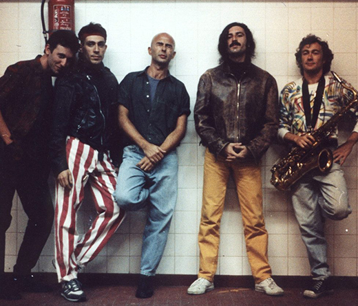

Pasaron 45 años de la creación de la banda, la misma tuvo como líderes centrales al Indio Solari como cantante y letrista, Skay Beilinson como guitarrista y compositor, la Negra Poli como mánager. Alcanzaron una gran popularidad dentro del rock argentino manteniéndose como una banda independiente sin recurrir al apoyo de grandes discográficas. «Fue una banda de rock que se forma en La Plata 1976 en la plaza, en el pasaje rojas y es considerada una de las bandas más influyentes del país. Argentina estaba viviendo la etapa pre Malvinas y después a ellos los ayuda mucho que en el post Malvinas no eran aceptadas las canciones en inglés» «En la segunda mitad de la década de 1980 continuaron su firme ascenso, coronándolo en diciembre de 1989 en el Estadio Obras Sanitarias con tres recitales, siendo el último en la cancha de hockey para 25.000 personas, algo inédito para el rock argentino» «Eran la banda del pueblo y a partir de allí se convirtieron en un fenómeno masivo con recitales en estadios cada vez más grandes, la violencia fue aumentando, en América del Sur, fue aumentando en Argentina, hasta que se da la muerte Bulacio en manos de la policía en 1991. Esto provocó que el grupo se alejara de la capital y a partir de 1995 empezara a hacer recitales esporádicos por todo el país pero no tocando ya más en Buenos Aires aunque llegó a su clímax en el 2000 para 70.000 asistentes en el Monumental y ahí cerraron» «El Indio blanquea su Parkinson en el recital, en el documental le dice a Pergolini -No digas nada boludo porque lo voy a decir hoy de noche en el concierto. Ese toque a su vez termina empañado porque fallecieron una o dos personas porque había un límite de personas para el recital»
